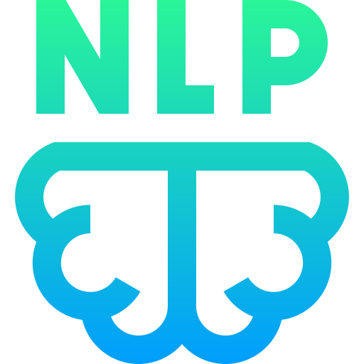
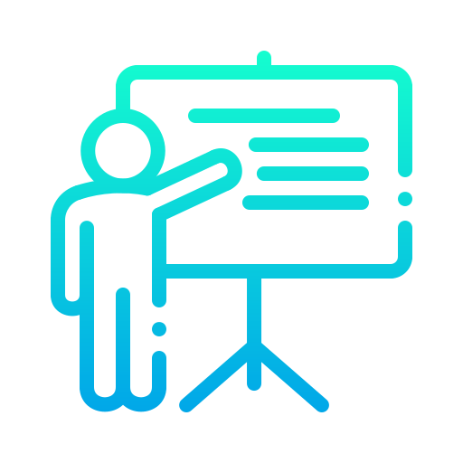
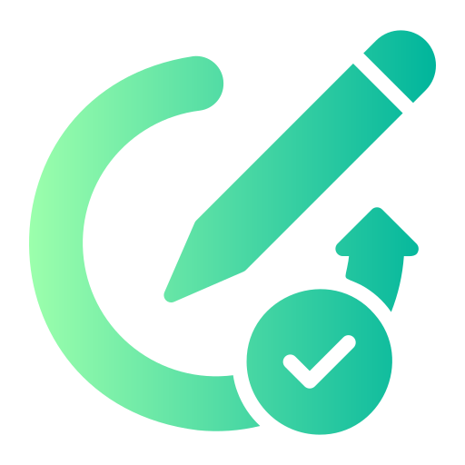

Works and Activities

Exercise M1: Implementing NLP Application Models
Implementation of NLP application models using Spacy, focusing on practical applications and model deployment.
Spacy
NLP
Ipynb
View Activity
Spacy
Open-source library for advanced Natural Language Processing in Python.
Natural Language Processing
Technology enabling computers to understand and process human language.
Jupyter Notebook
Interactive computing environment for creating and sharing documents with live code.
Exercise M1.1: Evaluating NLP Model Performance
Assessment and evaluation of NLP model performance metrics and optimization techniques.
Metrics
Evaluation
Ipynb
View Activity
Performance Metrics
Measurements used to evaluate the effectiveness of NLP models.
Model Evaluation
Process of assessing model performance using various metrics and techniques.
Jupyter Notebook
Interactive computing environment for creating and sharing documents with live code.
Exercise 5: BERT-based QnA System
Development of a Question-Answering system using BERT transformers model.
BERT
QnA
Ipynb
View Activity
BERT
Bidirectional Encoder Representations from Transformers: Advanced language model for NLP tasks.
Question & Answer
System designed to automatically answer questions posed in natural language.
Jupyter Notebook
Interactive computing environment for creating and sharing documents with live code.

P-M1: Project Proposal Presentation
Presentation of the project proposal outlining objectives, methodology, and expected outcomes.
Presentation
Proposal
Documentation
View Activity
Presentation
Visual and verbal communication of project plans and objectives.
Project Proposal
Detailed plan outlining project goals, methodology, and expected outcomes.
Documentation
Written materials detailing project specifications and requirements.

P-M1: Revised Project Proposal
Updated project proposal incorporating feedback and refinements to the original plan.
Revised
Documentation
View Activity
Revised Version
Updated proposal incorporating feedback and improvements.
Documentation
Written materials detailing project specifications and requirements.

Midterm Examination
Comprehensive assessment covering NLP application models, performance evaluation, and project proposal development.
Exam
View Activity
Examination
Comprehensive assessment of NLP concepts, models, and applications.